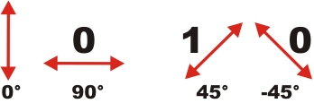
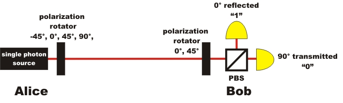
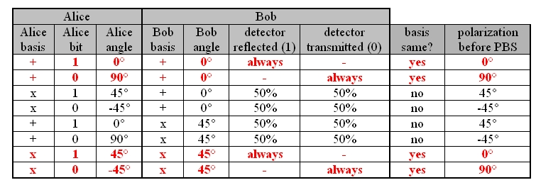
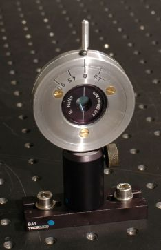
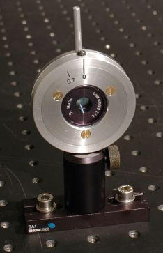
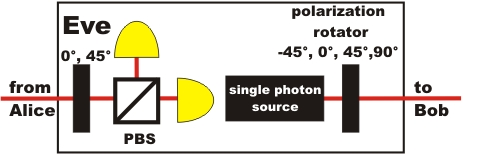
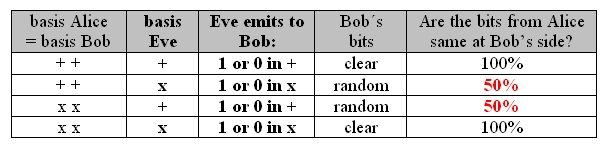

Quantum Cryptography Chapter 3:
Code distribution with the detection of a spy
In the last chapter on code distribution with single photons it was shown how the basic principle of code distribution between Alice and Bob works. Unfortunately, in this scenario a spy could copy the secret key code undetected. On this page, the system is amended by a second basis for measurement, so that at the end of the distribution process, spies can be detected.
Introduction of the second basis
In order to detect spies in quantum cryptography, additional elements have to be installed in the system. Bob and Alice therefore use two measurement bases: Basis Plus (term: +) and Basis X (term: x). In each basis, there is a fixed defined direction of polarization for the two bits 1 or 0. In the basis +, the polarization of 0° equals the bit "1", while the polarization of 90° equals the bit "0" (pic. 1 left). In the basis x, the polarization 45° equals the bit "1" and the polarization -45° equals the bit "0" (pic. 1 right).

pic. 1: measurement basis + (left) and measurement basis x (right)
In order to transmit a bit, Alice has to choose at random twice. First, she randomly decides which basis she would like the bit in: + or x. Then, she randomly decides which bit she would like to transmit in this basis: 1 or 0. Alice therefore needs four different angles at her polarization rotator: 0°, 90° for the basis + and 45°, -45° for the basis x (pic. 2). Bob also has to randomly choose one measurement basis: + or x. To do this, he needs a polarization rotator with two fixed settings in his receiver unit. Bob also completely at random decides to take either 0° for the measurement basis + or 45 ° for the measurement basis x (pic. 2).

pic. 2: sketch of experiments on quantum cryptography
If Alice sends the photon in basis + with the polarization 0° or 90°, and Bob selects the basis +, you get unambiguous results. If Alice sends the photon in the basis x with the polarization -45° or 45°, and Bob selects the basis x, you also get unambiguous results. If Alice and Bob randomly select the same bases, the transmitted data are unambiguous and can be used for the code (chart 1). If Alice sends the photon in the basis + with the polarization 0° or 90°, and Bob selects the basis x, the photon is diagonally polarized in front of the beam splitter. If a diagonally polarized photon hits a polarization beam splitter, the photon is transmitted or reflected at a probability of 50% each. The same 50% to 50% behaviour at the beam splitter occurs if Alice sends the photon in the basis x and Bob selects the basis + for the measurement. If Alice and Bob select different bases, the data transmitted are completely random and have no use whatsoever (chart 1).

chart 1: overview of the various possibilites
Code distribution with a second basis in an experiment
In the interactive experiment below the results of chart 1 can be verified with real measurement data. The two polarization rotators (pic. 3) can be adjusted manually in the interactive experiment by using the grey pushbuttons. At Alice's side, the polarization can be adjusted to -45°, 0°, 45° and 90° (pic. 3 left). At Bob's side, the polarization can be adjusted to 0° (basis +) and 45° (basis x) (pic. 3 centre). Like in the real experiment, the polarization rotators at Alice's and Bob's side can also be operated automatically (pic. 3 right). For an overview of the various measurements, on Alice's as well as on Bob's side, lists can be faded in.
The generated code must be unpredictably random (chapter 1: requirement 3). In manual operation with the polarization rotators, the decision by the experimenter (Alice or Bob respectively) must be random. Alice and Bob must never determine the setting by a fixed routine, but arbitrarily. If the polarization rotator is operated automatically on Alice's and Bob's side (pic. 3 right), it must be accessed via complete random. This complete random is generated experimentally by a quantum random generator. The random numbers have previously been recorded and saved in the quantum random experiment. For complete security, the quantum random number must be generated directly parallel and be transferred onto the automatic polarization rotator without buffering.


pic. 3: polarization rotator for quantum cryptography
left: polarization rotator Alice -45°, 0°, 45°, 90°
centre: polarization rotator Bob 0° (basis +) and 45° (basis x)
right: automatic polarization rotator for Alice and Bob
First, make sure in the interactive experiment that you get unambiguous measuring results when you select identical bases (a). Alice and Bob always select the measuring basis purely at random and independent of each other. During the measuring process, none of them knows which basis their partner has selected. Now which possibilities are there for Alice and Bob so that they can both, after transmission, delete the entries in the lists with the different measurement bases, and thus get an unambiguous and secret code (b)?
Monitoring and explanation:
As regards a)
The measurement results are unambiguous if Alice and Bob select the same basis. If they select different bases, it is impossible to predict whether the photon will be transmitted or reflected at the polarization beam splitter. If the same bases are selected, there are only very few cases (1%) where, due to experimental inaccuracies and measurement errors, Alice e.g. sends a binary 1 and Bob receives a binary 0. These errors can later be filtered out by special error algorithms (see in more detail "exact process of quantum cryptography") .As regards b)
How do Alice and Bob get an unambiguous and secret code from the settings and measurement results?
For every photon she has sent, Alice takes a note in her list regarding which basis she has selected and which bit she has sent. Bob notes in his list which basis he has selected for measurement and which detector has registered the photon. Alice and Bob thus have two lists with the entries: photon - basis - bit (pic. 4 left). After e.g. 100 photons, Alice and Bob talk to each other on the phone and only reveal which photon they measured in which basis. If the bases correlate, the results are kept. If the bases do not correlate, the results are deleted (pic. 4 right). During the phone call, only the bases used are disclosed, the sent or measured bit remains secret. A spy could listen to this phone call and would not be any the wiser with the information. The real issue - the bits transmitted unambiguously - is not unveiled and remains secret.In the end, only 50% of all original measurement results are used for the random code. Contact between Alice and Bob and the deletion of faulty results can, of course, also be established through a computer. With quantum random generators and the two automatic polarization rotators, the system works completely independently. With our motor-driven automatic polarization rotators in the demonstration experiment, only a raw data rate of less than 1 bit per second is possible. For practical use, this data rate far too small. A bit rate of up to several million bit per second is feasible with electro optic polarization rotators, as these do not have any mechanically movable parts.
Can Alice and Bob be really sure now that only the two of them know the secret code? Is it not possible that the spy has copied the code undetected again?
pic. 4 left: results after transmission: random bases selection on Alice's and Bob's side.
pic. 4 right: results after deleting the different bases.
Code distribution with single photons: detecting the spy
Up to this point, we cannot be sure that the efforts with the two bases for the secure generation of a code between Alice and Bob have really paid off. Eve the spy may also upgrade her monitor with additional polarization rotators for the selection of the two bases (pic. 5) .

pic. 5: Eve's monitor with two bases
Eve the spy can now also select a basis at random and measure the photon. Eve must then send a new photon to Bob immediately. In 50% of cases, Eve will select the wrong basis when doing this. This error made by Eve can only be perceived by Alice and Bob, however, if they have selected the same basis. If they have, Alice and Bob should always get unambiguous results. In chart 2, all error possibilities of Eve are outlined for the case where Alice and Bob have selected the same basis.

chart 2: possibilities for transmission with eavesdropping Eve
All in all, if Alice and Bob select the same bases, Eve's presence leads to an error rate of 25%. In order to blow Eve's cover, Alice and Bob, after deleting the dissimilarly selected bases, have to check some of the unambiguous measurement results in public. If there is an error rate of 25% min. while the data are really unambiguous, Eve is detected. She can only be found out after the code distribution though. Up to this point, only the code has been generated, which does not have anything to do with the actual message to be encoded. If a spy is present, this code is simply deleted and not used for encoding the actual message. The bits used for verifying the presence of a spy are deleted from the real code as a matter of course. After excluding the spy and correcting the measurement errors (ca. 1%) with special error correction algorithms, the key can be used for the real encoding between Alice and Bob. The exact procedure from the code distribution to the encoded message is described in the next chapter under the title Procedure.
A quantum copier for Eve?
If she is using the spying device shown above (pic. 5), Eve will always be detected. The best idea for Eve would be to use a machine which could copy the photon exactly, with all its features. While copying the photon, the polarization of the original photon must, however, remain unaltered. Alice and Bob could never detect Eve were she to use such a quantum copier. Eve could copy each photon between Alice and Bob twice and measure them each with two separate bases. Together with the information gathered from the phone call between Alice and Bob, disclosing the respective basis, Eve would acquire possession of the code. Again, the system of quantum cryptography, despite the two bases, would not offer absolute security any more.
Good job that there is quantum physics: It is never possible to copy an unknown quantum state perfectly. It was only in 1982 that this quantum physics basic principle has been formulated as the "no-cloning-theorem" and theoretically proven. [Woo82]. The polarization of the photon sent by Alice can therefore never be copied without altering the polarization of the original photon. The security of the quantum cryptography system rests on the basics of quantum physics. The quantum cryptography system with single photons and the purely random selection of two bases is 100% secure, thanks to the "no-cloning-theorem".
In the next chapter, the exact procedure of quantum cryptography is recapitulated in an overview. Further paragraphs outline the state-of-the-art and the single photon source used in the demonstration experiment.
Original data from the experiment: random data for polarization rotators, single events, continuous events
To chapter 4: procedure, research and single photon source [klick]
Back to overview
Autor: P. Bronner, August 2008
Translation: G. Murphy